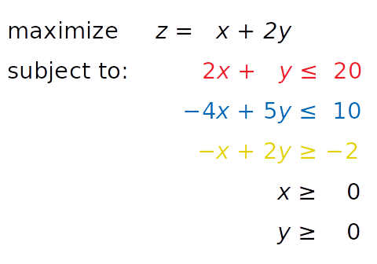
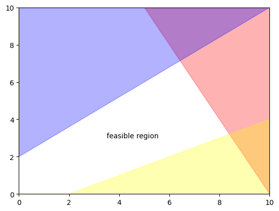
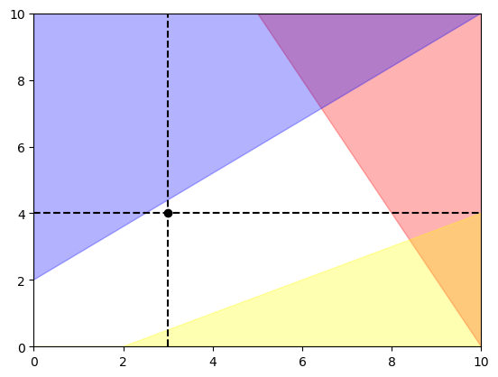

Code
import os
import matplotlib.pyplot as plt
import numpy as np
import warnings
warnings.filterwarnings("ignore")
warnings.filterwarnings("ignore", category=DeprecationWarning)
from scipy.optimize import linprogIn this notebook we are going to dig into the basics of optimization underpinning PESTPP-OPT (and to an extent, PESTPP-MOU) through a very simple linear programming example, reproduced from https://realpython.com/linear-programming-python/
Let’s set up a linear optimization problem where we seek to maximize z given the objective function equation in black below. The two decision variables are x and y. The decision variables are subject to a bound constraint, where they both must be equal or greater to zero. The linear combination of x and y is also subject to three constraint equations, shown in red, blue, and yellow.

Conveniently, we can visualize the five constraints on a 2-d plot, where the white space is the feasible region. Woops, that’s another key optimization term! - feasible:a set of decision variables that satisfies all constraints
x = np.linspace(0,1000)
y = 20 - 2*x
plt.fill_between(x, y,1000, color='red', alpha=0.3)
x = np.linspace(0,1000)
y = (10 + 4*x)/5
plt.fill_between(x, y,1000, color='blue', alpha=0.3)
x = np.linspace(0,1000)
y = (-2 + x)/2
plt.fill_between(x, y, color='yellow', alpha=0.3)
plt.xlim(0,10)
plt.ylim(0,10)
plt.text(3.5,3,'feasible region')Text(3.5, 3, 'feasible region')
obj = [-1, -2]
#wait why does z= x+2y have coefficients of -1 and -2 instead of 1 and 2?
#because scipy linprog assumes minimization. to "maximize," we flip them to negative
lhs_ineq = [[ 2, 1], # Red constraint left side
[-4, 5], # Blue constraint left side
[ 1, -2]] # Yellow constraint left side
#(again, note that coefficient signs are flipped because it's a greater than constraint rather than less than)
rhs_ineq = [20, # Red constraint right side
10, # Blue constraint right side
-2] # Yellow constraint right sideWe can print the objective function value.
And check to see if an optimal solution (value of x and y) was found
Let’s print out the decision variable values for that optimal solution
And we can visualize those decision variable values on our plot.
x = np.linspace(0,1000)
y = 20 - 2*x
plt.fill_between(x, y,1000, color='red', alpha=0.3)
x = np.linspace(0,1000)
y = (10 + 4*x)/5
plt.fill_between(x, y,1000, color='blue', alpha=0.3)
x = np.linspace(0,1000)
y = (-2 + x)/2
plt.fill_between(x, y, color='yellow', alpha=0.3)
plt.xlim(0,10)
plt.ylim(0,10)
plt.scatter(opt.x[0],opt.x[1],c='black')Notice that the solution is in the feasible region but right at the boundary of two of the constraints. This is where optimization departs from parameter estimation, as it is normal and even optimal for parameters to hit their bounds.
x = np.linspace(0,1000)
y = 20 - 2*x
plt.fill_between(x, y,1000, color='red', alpha=0.3)
x = np.linspace(0,1000)
y = (10 + 4*x)/5
plt.fill_between(x, y,1000, color='blue', alpha=0.3)
x = np.linspace(0,1000)
y = (-2 + x)/2
plt.fill_between(x, y, color='yellow', alpha=0.3)
plt.xlim(0,10)
plt.ylim(0,10)
plt.axvline(bnd[0][1],ls='--',c='black')
plt.axhline(bnd[1][1],ls='--',c='black')
plt.scatter(opt.x[0],opt.x[1],c='black')
Now, the optimal solution is entirely constrained by the bounded values of the decision variables. Thus, in linear optimization, the constraints are key and decision variable bounds should be carefully designed. For example, for maximizing pumping subject to the constraint of not capturing too much streamflow, we still want to set bounds on our pumping wells based on actual pump capacity and yield.